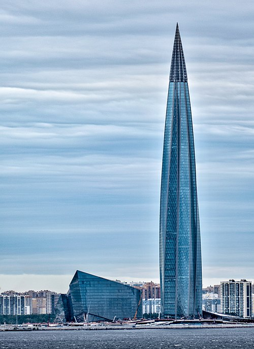
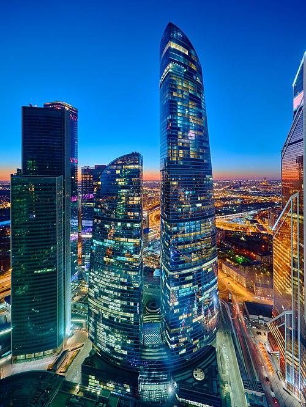
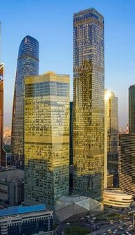
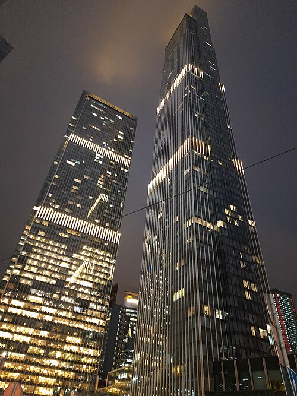
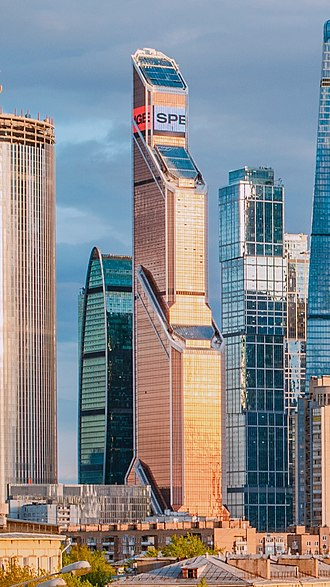
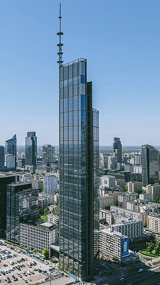
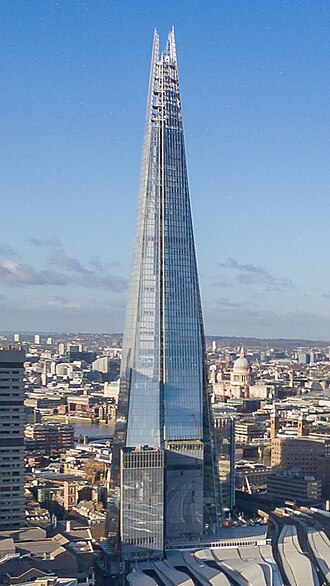
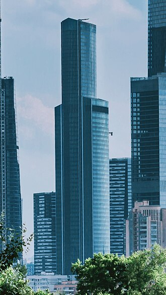
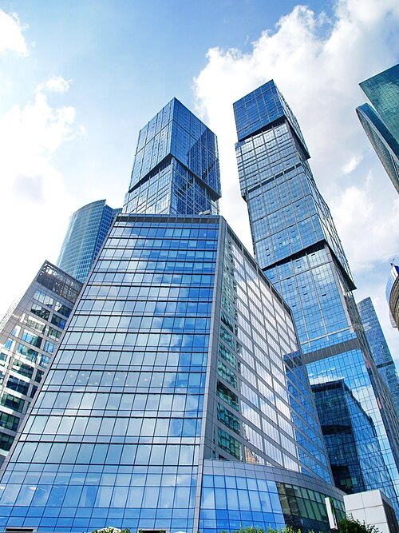

Najwyższe budynki w Europie
Na 20 najwyższych budynków w Europie aż 15 znajduje się na terenie Rosji, z czego 14 z nich w Moskwie.
| Nr | Budynek | Wysokość | Liczba pięter | Państwo | Zdjęcie |
|---|---|---|---|---|---|
| 1 | Lakhta Center | 462m | 87 | Rosja | 
|
| 2 | Federation: East Tower | 373,7m | 93 | Rosja | 
|
| 3 | OKO: South Tower | 354,2m | 90 | Rosja | 
|
| 4 | Neva Tower 2 | 345m | 79 | Rosja | 
|
| 5 | Mercury City Tower | 338,8m | 75 | Rosja | 
|
| 6 | Varso Tower | 310m | 53 | Polska | 
|
| 7 | The Shard | 309,6m | 73 | Wielka Brytania | 
|
| 8 | Eurasia | 308,9m | 67 | Rosja | 
|
| 9 | Neva Tower 1 | 302m | 65 | Rosja |
|
| 10 | City of Capitals: Moscow Tower | 301,8m | 76 | Rosja | 
|